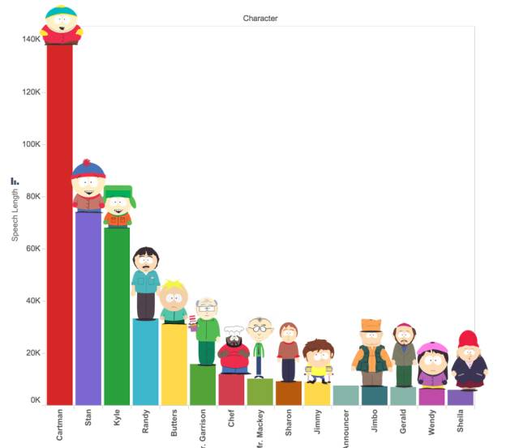
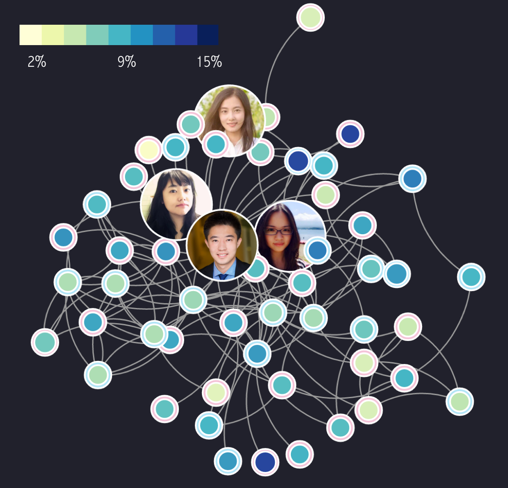

Hello
Who's Rene Li?
Data scientist.
Statistics geek. She holds B.S. in Statistics, probability is what she trusts in.
Programmer. She writes codes in Python and R.
Designer. She loves data visualization and web design.
Projects
Unveil my projects in 2016
-

Topic Analysis in South ParkAs this show respond quickly to special events that occurred at the time it is broadcasted, this show reflects the on-time change of the American society over a long period of time. This show also conveys strong emotions, both reflected by its animation and some vivid language in the script, and is a good resource for sentiment and tone analysis. Besides that, the dialogues among main characters contain rich information about the interpersonal relationship, such as how well these characters get along with each other and how their relationships change.Click to try it out.
-
Deep Fried RestauranetWe used deep learning algorithms to tag restaurants using photos uploaded by Yelp users with labels such as “good for lunch”, “has outdoor seating”, and “takes reservations”. Instead of spending large amount of time doing feature engineering, we trained a CNN model using 3x3 grid photos for each restaurant and increase the prediction accuracy to 78% compared to a 63% baseline. It only took us around 18 hours to run 100 epochs(8GB GPU on AWS). In terms of both accuracy and speed, the models improved a lot.
-
Visualizing Government AchievementsA star war fan? Wanna know how well does Romulans and Klington run their government? My project of visualizing unemployment will tell you about this. To show that data can be deceptive and biased when abused, I made two extremely biased poster for both parties, showing only partial truths. To reveal a truth that will make the conclusion more intriguing, the data for Romulans and Klington governments is actually true data from Republican and Democratic governments.
-
When does people start getting married?While friends around me transit from college students complaining about their homework tasks to gorgeous brides with sophisticated make up, I start to think of this question, when do people start getting married. So I did this project with public survey data, ended up with dashboard with multiple filter where you can see the distribution of marriage age within each category with different races, employment status, education level..
-

Marriage Score in social networkFrom the marriage study, I moved one step further. I used this dashboard to track the marriage probability of friends in my boyfriend's network and built a draggable network heatmap with D3.js.Click to try it out.
-
Mining Phone Manufacturing DataDuring a 9 month practicum project with Motorola, we team of 5 MSiA students helped them identify features of the phone testing process correlated with returns using advanced analytics techniques.To show our model results and explore other interesting features of the testing process, we created a dashboard in R Shiny which includes test time, failure and phone return analysis.
-
 Hues of New York Fashion WeekI used kmeans clustering to find the dominant colors of costumes images and draw color thumbnails for designer collections, this clustering algorithm help me get better color recognization than average color and most frequent color.
Hues of New York Fashion WeekI used kmeans clustering to find the dominant colors of costumes images and draw color thumbnails for designer collections, this clustering algorithm help me get better color recognization than average color and most frequent color.

![Deep Fried Restauranet We used deep learning algorithms to tag restaurants using photos uploaded by Yelp users with labels such as “good for lunch”, “has outdoor seating”, and “takes reservations”. Instead of spending large amount of time doing feature engineering, we trained a CNN model using 3x3 grid photos for each restaurant and increase the prediction accuracy to 78% compared to a 63% baseline. It only took us around 18 hours to run 100 epochs(8GB GPU on AWS). In terms of both accuracy and speed, the models improved a lot.](images/poster.jpg){kind=link}
![Visualizing Government Achievements A star war fan? Wanna know how well does Romulans and Klington run their government? My project of visualizing unemployment will tell you about this. To show that data can be deceptive and biased when abused, I made two extremely biased poster for both parties, showing only partial truths. To reveal a truth that will make the conclusion more intriguing, the data for Romulans and Klington governments is actually true data from Republican and Democratic governments.](images/govern.png){kind=link}
{kind=link}
{kind=link}
{kind=link}
{kind=link}
{kind=link}
{kind=link}
{kind=link}
{kind=link}